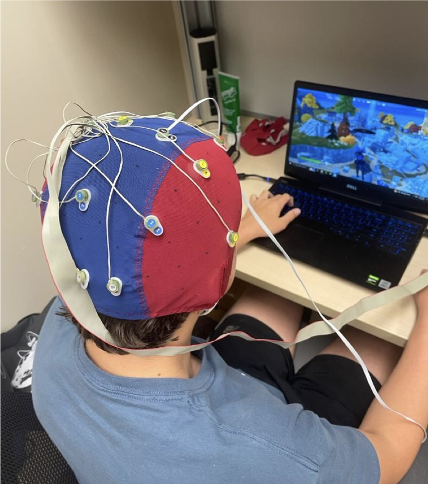
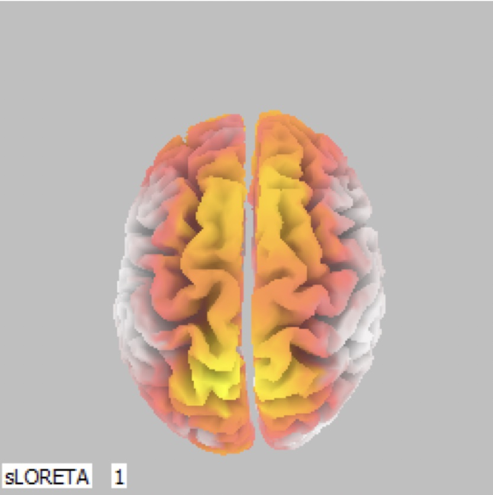
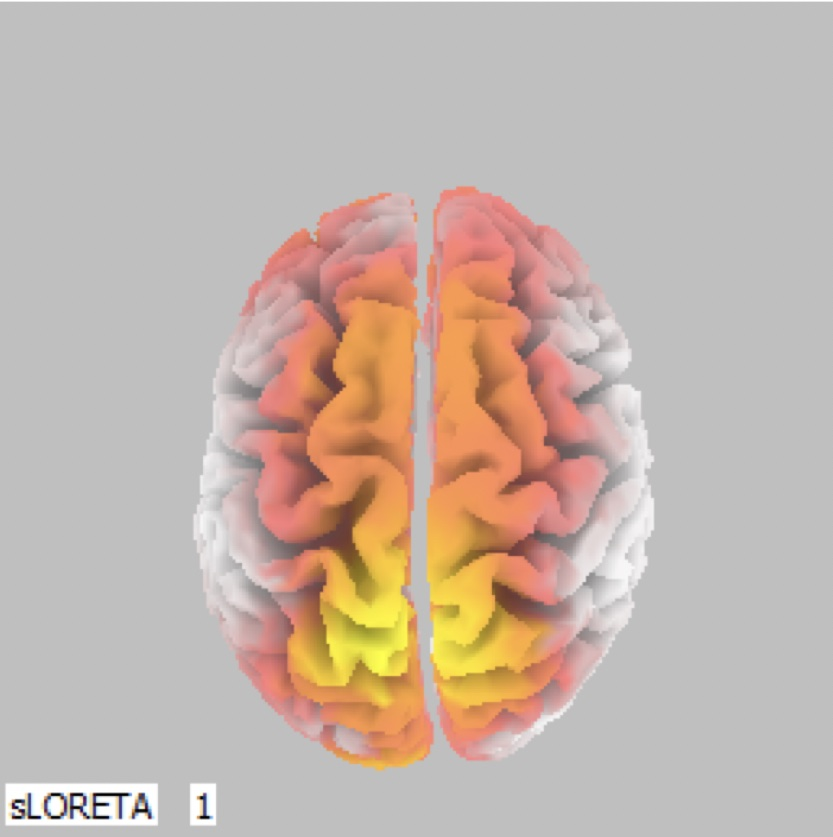
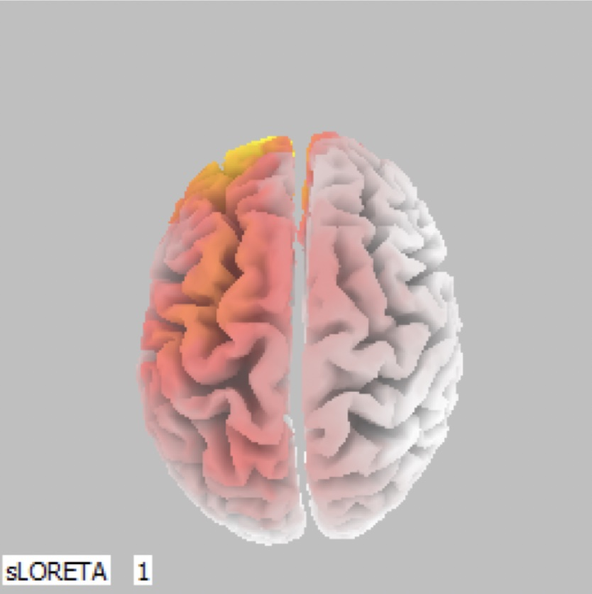
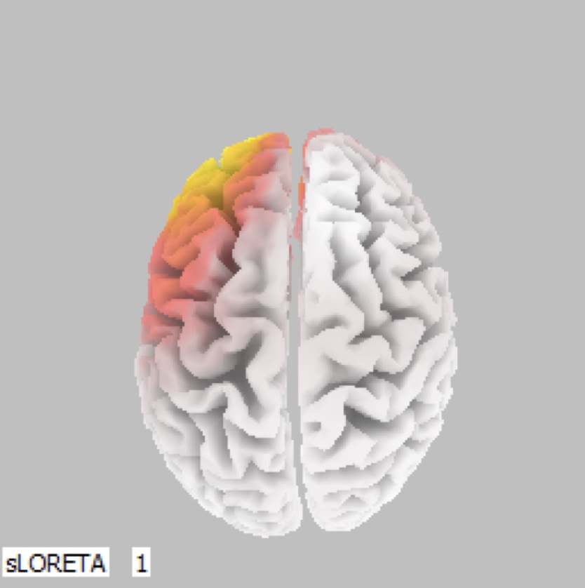
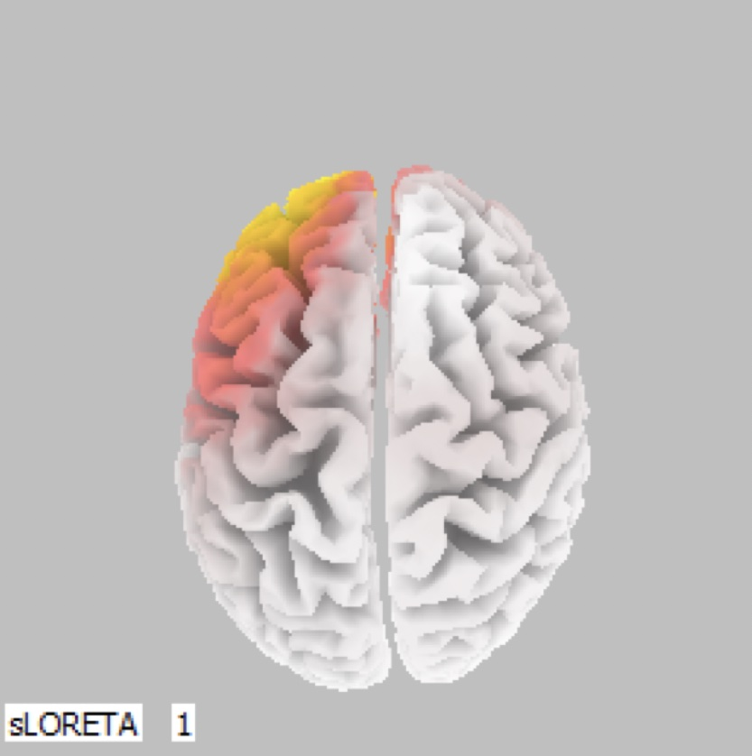

We recorded teenagers' brain activity with an EEG cap while they played Fortnite and Minecraft, then mapped where in the brain that activity came from. Both games consistently lit up regions tied to decision-making and emotional regulation. Minecraft produced more varied patterns linked to creativity and exploration, and neither game showed strong signs of activity associated with negative emotions.
The question
Fortnite and Minecraft are two of the most popular games among teenagers, but they feel very different: one is a fast-paced battle royale, the other an open-ended building game. Parents, developers, and health professionals all wonder what these games actually do to how teens feel.
Plenty of research links games to emotions, but as far as we know, no one had used EEG to compare teens' brain responses to Fortnite and Minecraft specifically. That's what EmoGame set out to do.
How the study worked

- DesignWithin-subjects: every participant played both games, so each person is compared with themselves.
- Participants15 teens (13–18) who game at least 3 hours a week. Sample size set by power analysis.
- EquipmentBioSemi ActiveTwo EEG system, a non-invasive cap with electrodes.
- Session1 hour in a controlled lab, 20 minutes per game, with standardized settings.
- EthicsApproved by the KSU Institutional Review Board, with parental consent and teen assent.
From brainwaves to brain maps
- Record EEG during gameplay, with timestamps marking the start and end of each game.
- Clean the signal: remove artifacts, filter, and downsample to a manageable size.
- Localize the activity with sLORETA software, which estimates where in the brain signals originate across frequency bands (delta, theta, alpha, beta, gamma).
- Map the results onto Brodmann areas, a standard numbering of brain regions, and compare the two games.
Reading the brain maps
The images below are top-down views of the brain (front at the top). Brighter yellow means stronger activity. As a rough guide, left-side frontal activity is associated with positive emotions, and right-side activity with processing negative or threatening stimuli.
What we found
Three players, three different patterns
Both hemispheres active in both games. Brodmann Area 11, an emotion-evaluation region, was active during both games. Activity on both sides suggests a blend of positive and negative emotions at the same time, with especially strong engagement during Fortnite.


Each game lit up a different region. Fortnite activated Area 10 (front: strategy and decision-making). Minecraft activated Area 7 (back: spatial processing), which fits a game built around exploring and building.


The same pattern in both games. Area 11 and the same frontal region were active in both games, suggesting a stable, consistently immersive experience regardless of which game was played.


Across all participants
Looking at which Brodmann areas were active for participants during both games:
Consistent activity in the emotion and decision regions (Areas 10 and 11), suggesting engagement and excitement. No strong evidence of activity linked to negative emotions.
The same core activity, plus more varied patterns, including toward the back of the brain. This may reflect positive emotions tied to creativity and exploration. No strong evidence of negative emotions.
Why it matters
EEG-based analysis could become a way to monitor young gamers' emotional well-being directly, not just by asking them. These results can help game developers design responsibly, give parents a clearer picture of what specific games do, and support health professionals working on interventions for young gamers.
Limitations & next steps
Brain-region activity hints at emotion but doesn't measure it directly, and individual differences are large. Future work should add self-report questionnaires and other signals like heart rate variability, study specific in-game events, follow players over time, and include more games, age groups, and cultural backgrounds.